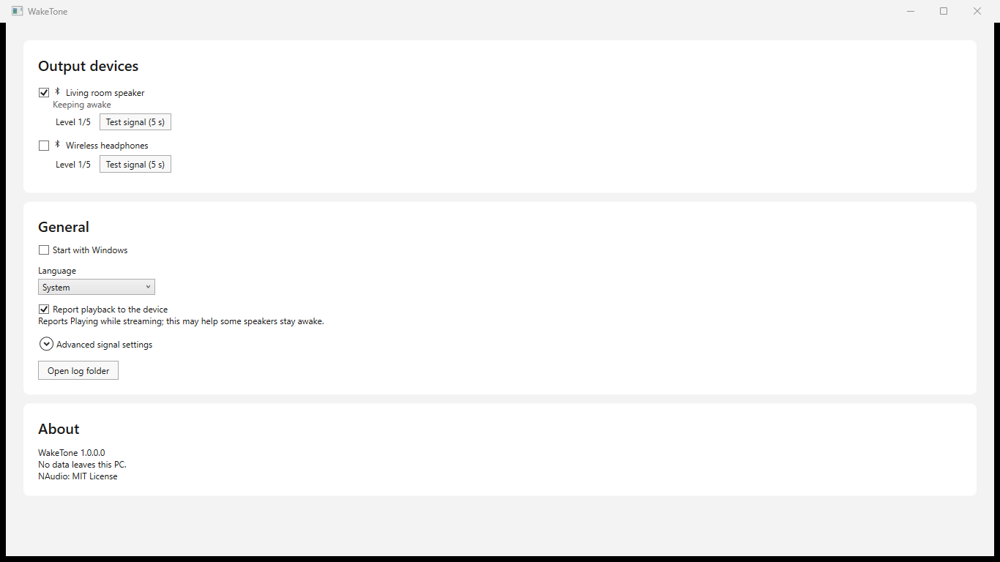

Quiet by design
A near-silent signal and playback status reporting help keep speakers awake.
Keeps your Bluetooth speakers from turning themselves off.
WakeTone quietly keeps your selected audio devices awake, so they’re ready when you press play.
Get it from Microsoft Store
THE LITTLE DETAILS
Simple controls for the devices you already use, with your privacy built in.
A near-silent signal and playback status reporting help keep speakers awake.
Use WakeTone with your audio output devices, Bluetooth or otherwise.
Choose devices individually, adjust their settings, and pause when you need to.
Settings and logs stay local. Nothing leaves your computer.